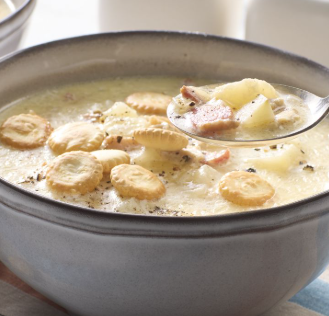

Clam-Chowder

Description
Ingredients
- 2 cups clams (fresh or canned), chopped (reserve the juice if using canned)
- 2 cups clam juice or seafood stock
- 1 cup heavy cream
- 2 medium potatoes, peeled and diced
- 1 medium onion, finely chopped
- 2 stalks celery, diced
- 2 slices bacon, chopped
- 2 tablespoons all-purpose flour
- 2 tablespoons butter
- Salt and freshly ground black pepper, to taste
- Fresh parsley or chives (optional, for garnish)
Steps
- Cook 2 slices of chopped bacon in a large pot until crispy; remove and set aside, leaving the fat in the pot.
- Add 2 tablespoons butter to the pot, then sauté diced onion and celery until soft.
- Stir in 2 tablespoons flour, cooking for 1-2 minutes to form a roux.
- Gradually add 2 cups clam juice or seafood stock, whisking to avoid lumps.
- Add diced potatoes and cook until tender, about 10-15 minutes.
- Stir in the reserved clams and their juice (if using canned), cooking gently to warm through.
- Add 1 cup heavy cream, stirring to combine; do not boil.
- Season with salt and freshly ground black pepper to taste.
- Garnish with crispy bacon and fresh parsley or chives if desired.